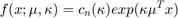
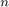
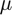
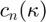
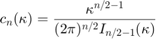
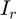
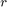

vmffactory
Construct a von Mises-Fisher distribution structure
Syntax
D = vmffactory(datadim)
Description
D = vmffactory(datadim) returns a structure representing a datadim-dimensional VMF distribution on the unit sphere.
Distribution Parameters
- mu (datadim-by-1 vector) : The mean vector.
- kappa (scaler) : The kappa parameter.
Probability Density Function
The distribution has the following density:

where  is the data space dimensions,  is the mean vector and  is the normalization constant given by:

where  is the modified Bessel function of the first kind and order .
Example
% Construct several vmf distribution on a sphere: D = vmffactory(3); % Build three parameter structures and visualize samples colors = {[ 0 0 1], [0 1 0], [1 0 0]}; mus = {[-0.57; 0.57; 0.57], [0; -1; 0], [1; 0; 0]}; for k = 1 : 3 theta.kappa = 7^(k-1)*2; theta.mu = mus{k}; data = D.sample(theta, 5000); h = plot3(data(1,:), data(2,:), data(3,:), '.'); set(h, 'MarkerSize', 4, 'Color', colors{k}, 'Marker', '.'); h = line([0 mus{k}(1)], [0 mus{k}(2)], [0 mus{k}(3)]); set(h, 'LineWidth', 2, 'Color', colors{k}); hold on end

name
See distribution structure common members.
M
See distribution structure common members.
dim
See distribution structure common members.
datadim
See distribution structure common members.
ll
See distribution structure common members.
llvec
See distribution structure common members.
llgrad
See distribution structure common members.
llgraddata
See distribution structure common members.
See distribution structure common members.
sample
See distribution structure common members.
randparam
See distribution structure common members.
init
See distribution structure common members.
estimatedefault
Default estimation function for von Mises-Fisher distribution. This function implements the maximum likelihood method.
Syntax
theta = D.estimatedefault(data) theta = D.estimatedefault(data, options) [theta, D] = D.estimatedefault(...) [theta, D, info] = D.estimatedefault(...) [theta, D, info, options] = D.estimatedefault(...)
Description
theta = D.estimatedefault(data) returns estimated parameters for the distribution D, using data.
theta = D.estimatedefault(data, options) utilizes applicable options from the options structure in the estimation procedure.
[theta, D] = D.estimatedefault(...) also returns D, the distribution structure for which theta is applicable. (This is the same as the distribution structure D from which you called estimate, and so it should not normally be used. The purpose of including it in the output is to maintain compatibility with other estimation functions).
[theta, D, info] = D.estimatedefault(...) also returns info, a structure array containing information about successive iterations performed by iterative estimation functions.
[theta, D, info, options] = D.estimatedefault(...) also returns the effective options used, so you can see what default values the function used on top of the options you possibly specified.
For information about the output theta, see Distribution Parameters Structure. The input argument data is described in Data Input Argument to Functions. You may also want to read about options or info arguments.
Available Options
Currently no options are available for this function.
Returned info fields
The method used is not iterative and so the returned info is empty.
Example
% create a VMF distribution D = vmffactory(3); % generate 1000 sample data points from the distribution theta_sample = struct('mu', [0.7; 0.14; -0.7], 'kappa', 10); data = D.sample(theta_sample, 1000); % estimate distribution parameters to fit the data theta = D.estimatedefault(data)
sumparam
See distribution structure common members.
scaleparam
See distribution structure common members.
sumgrad
See distribution structure common members.
scalegrad
See distribution structure common members.
AICc
See distribution structure common members.
BIC
See distribution structure common members.
display
See distribution structure common members.
visualize
Syntax
handle_array = D.visualize(D, theta, vis_options)